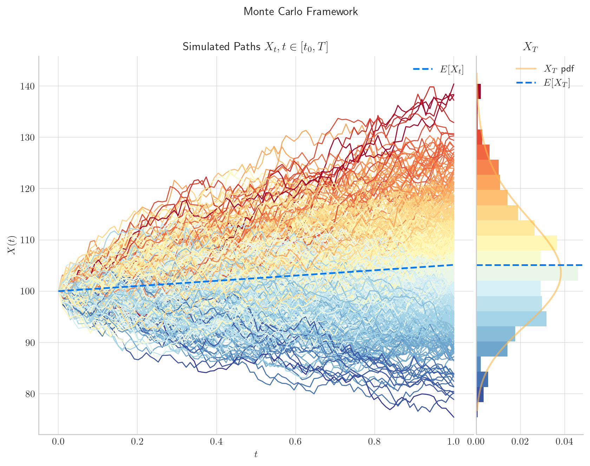
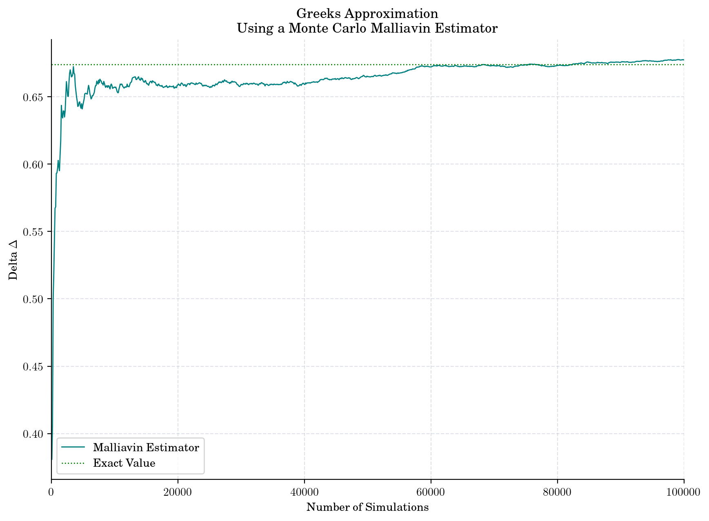
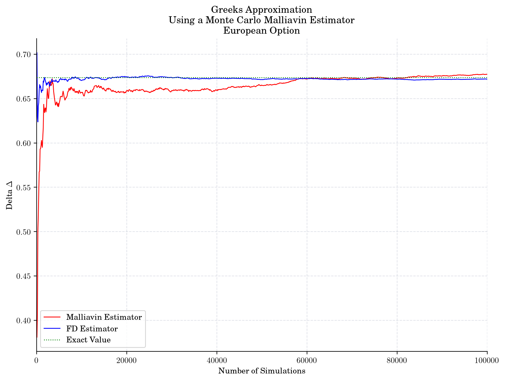
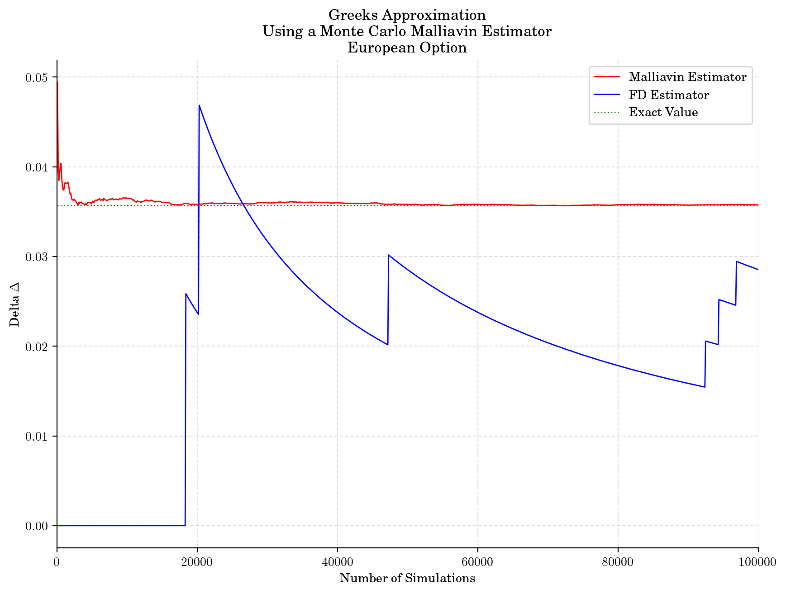
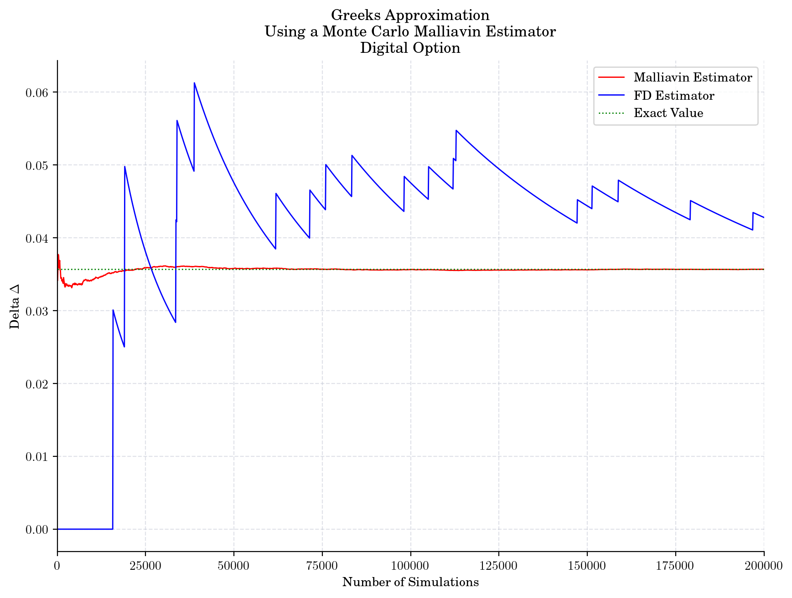
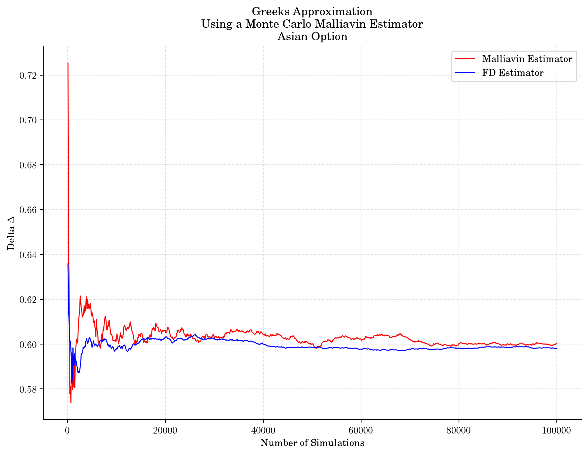

Malliavin Greeks under Black-Scholes Dynamics#
This notebook is part of the materials that I used for my industry expert Lecture at KCL. Slides and further details will be available at a later date.
In this notebook, we are going to illustrate the estimation of Greek sensitivities using Malliavin Calculus.
import numpy as np
from aleatory.processes import GBM, BrownianMotion
import numpy as np
from scipy.stats import norm
%config InlineBackend.figure_format ='retina'
import matplotlib.pyplot as plt
my_style = "https://raw.githubusercontent.com/quantgirluk/matplotlib-stylesheets/main/quant-pastel-light.mplstyle"
plt.style.use(my_style)
plt.rcParams["figure.figsize"] = (10, 7)
plt.rcParams["figure.dpi"] = 100
Process Dynamics#
We are going to use a Geometric Brownian process, i.e. Black-Scholes world, to model the dynamics of the price of the underlying asset. This means that \(X\) satisfies the following SDE
\[dX_t = r X_t dt + \sigma X_tdW_t,\]
with \(X_0=x_0>0\), where \(W_t\) denotes a standard Brownian Motion, and both \(r\) and \(\sigma\) are known parameters.
r = 5%
\(\sigma\) = 10%
\(x_0=100\)
Maturity T=1
x0 = 100.0
r = 0.05
sigma = 0.1
T = 1.0
process = GBM(drift= r , volatility=sigma, initial=x0, T=T)
process.draw(n=100, N=500, title='Monte Carlo Framework')
plt.show()

Malliavin Weight#
(2)#\[\begin{equation}
w = \dfrac{2 \int_0^T \dfrac{X_s}{\sigma} dW_s}{x \int_0^T X_t dt} + \dfrac{1}{x}
\end{equation}\]
Note
The weights only depend on the Dynamics and not on the payoff function!
Payoff : European Option#
K=101 # Strike is going to be fixed in this notebook
def payoff(x, kind="call"):
if kind == "call":
return np.maximum(x-K, 0)
elif kidn == "put":
return np.maximum(K - x, 0)
else:
return 0
Analytical Delta#
d_plus = (np.log(x0/K)+(r + 0.5*sigma**2)*T)*(1.0/(sigma*np.sqrt(T)))
d_minus = d_plus - sigma*np.sqrt(T)
std_normal = norm(loc=0, scale=np.sqrt(1))
delta = std_normal.cdf(d_plus)
delta
0.6738238303604167
Numerical Estimates#
def estimate_delta_malliavin(payoff, r, sigma, x0, T, N):
browniam_marginal = norm(loc=0, scale=np.sqrt(T))
brownian_sample = browniam_marginal.rvs(N)
gbm_sample = x0*np.exp((r - 0.5*sigma**2)*T + sigma*brownian_sample)
constant = np.exp(-1.0*r*T)/(sigma*x0*T)
deltas = []
sizes = range(100, N+1, 100)
for k in sizes:
mc_estimator = np.mean(payoff(gbm_sample[:k])*brownian_sample[:k])
delta = constant*mc_estimator
deltas.append(delta)
return sizes, deltas
N = 100000
sizes, malliavin_deltas = estimate_delta_malliavin(payoff=payoff, r=r, sigma=sigma, x0=x0, T=T, N=N)
plt.plot(sizes, malliavin_deltas, color="teal", label="Malliavin Estimator")
plt.hlines(delta, 0, sizes[-1], color="green", linestyle=":", label="Exact Value")
plt.xlim([0.0, sizes[-1]])
plt.ylabel("Delta $\Delta$")
plt.xlabel("Number of Simulations")
plt.title("Greeks Approximation\n Using a Monte Carlo Malliavin Estimator")
plt.legend()
plt.show()

def estimate_delta_fd(payoff, r, sigma, x0, T, N, epsilon=0.001):
browniam_marginal = norm(loc=0, scale=np.sqrt(T))
brownian_sample = browniam_marginal.rvs(N)
gbm_sample_up= (x0 + epsilon)*np.exp((r - 0.5*sigma**2)*T + sigma*brownian_sample)
gbm_sample_down = (x0 - epsilon)*np.exp((r - 0.5*sigma**2)*T + sigma*brownian_sample)
constant = np.exp(-1.0*r*T)
pv_plus = payoff(gbm_sample_up)
pv_minus = payoff(gbm_sample_down)
deltas = []
sizes = range(100, N+1, 100)
for k in sizes:
fd = np.mean((pv_plus[:k] - pv_minus[:k])/(2.0*epsilon))
delta = constant*fd
deltas.append(delta)
return sizes, deltas
sizes, fd_deltas = estimate_delta_fd(payoff=payoff, r=r, sigma=sigma, x0=x0, T=T, N=N)
plt.plot(sizes, malliavin_deltas, color="red", label="Malliavin Estimator")
plt.plot(sizes, fd_deltas, color="blue", label="FD Estimator")
plt.hlines(delta, 0, sizes[-1], color="green", linestyle=":", label="Exact Value")
plt.xlim([0.0, sizes[-1]])
plt.ylabel("Delta $\Delta$")
plt.xlabel("Number of Simulations")
plt.title("Greeks Approximation\n Using a Monte Carlo Malliavin Estimator\n European Option")
plt.legend()
plt.show()

Payoff : Digital Option#
def payoff_binary(x, kind="call"):
if kind == "call":
pay = np.maximum(x-K, 0)
return np.array( pay !=0 , dtype=int)
elif kidn == "put":
pay = np.maximum(K - x, 0)
return np.array( pay !=0 , dtype=int)
else:
return 0
sizes, fd_deltas_binary = estimate_delta_fd(payoff_binary, r, sigma, x0, T, N=N)
sizes, malliavin_deltas_binary = estimate_delta_malliavin(payoff_binary, r, sigma, x0, T, N=N)
delta_binary = (np.exp(-r*T)*std_normal.pdf(d_minus))/(sigma*x0*np.sqrt(T) )
delta_binary
0.03568775695099892
plt.plot(sizes, malliavin_deltas_binary, color="red", label="Malliavin Estimator")
plt.plot(sizes, fd_deltas_binary, color="blue", label="FD Estimator")
plt.hlines(delta_binary, 0, sizes[-1], color="green", linestyle=":", label="Exact Value")
plt.xlim([0.0, sizes[-1]])
# plt.ylim([0.2, 0.7])
plt.ylabel("Delta $\Delta$")
plt.xlabel("Number of Simulations")
plt.title("Greeks Approximation\n Using a Monte Carlo Malliavin Estimator\n European Option")
plt.legend()
plt.show()

sizes, malliavin_deltas_binary = estimate_delta_malliavin(payoff_binary, r, sigma, x0, T, N=2*N)
sizes, fd_deltas_binary = estimate_delta_fd(payoff_binary, r, sigma, x0, T, N=2*N)
plt.plot(sizes, malliavin_deltas_binary, color="red", label="Malliavin Estimator")
plt.plot(sizes, fd_deltas_binary, color="blue", label="FD Estimator")
plt.hlines(delta_binary, 0, sizes[-1], color="green", linestyle=":", label="Exact Value")
plt.xlim([0.0, sizes[-1]])
plt.ylabel("Delta $\Delta$")
plt.xlabel("Number of Simulations")
plt.title("Greeks Approximation\n Using a Monte Carlo Malliavin Estimator\n Digital Option")
plt.legend()
plt.show()

Payoff Asian Option#
def payoff_asian(x, kind="call"):
if kind == "call":
pay = np.mean(x)-K
return np.maximum(pay, 0)
elif kidn == "put":
pay = K - np.mean(x)
return np.maximum(pay, 0)
else:
return 0
def estimate_delta_fd_asian(payoff, r, sigma, x0, T, N, epsilon=0.001):
BM = BrownianMotion(T=T) # Brownian Motion
brownian_sim = np.asarray(BM.simulate(n=100, N=N))
times= BM.times
gbm_sample_up = (x0+epsilon)*np.exp((r - 0.5*sigma**2)*times + sigma*brownian_sim)
gbm_sample_down = (x0-epsilon)*np.exp((r - 0.5*sigma**2)*times + sigma*brownian_sim)
constant = np.exp(-1.0*r*T)
pvps = []
pvms = []
sizes = range(100, N+1, 100)
for i in range(len(gbm_sample_up)):
pv_plus = payoff(x = gbm_sample_up[i])
pvps.append(pv_plus)
pv_minus = payoff(x = gbm_sample_down[i])
pvms.append(pv_minus)
deltas = []
sizes = range(100, N+1, 100)
for k in sizes:
estimator = constant*(np.mean(pvps[:k-1])- np.mean(pvms[:k-1]))/(2.0*epsilon)
deltas.append(estimator)
return sizes, deltas
def estimate_delta_malliavin_asian(payoff, r, sigma, x0, T, N):
BM = BrownianMotion(T=T) # Brownian Motion
brownian_sim = np.asarray(BM.simulate(n=100, N=N))
times= BM.times
mu = r - 0.5*sigma**2
gbm_sim = x0*np.exp(mu*times + sigma*brownian_sim) # N paths
constant = (2.0*np.exp(-1.0*r*T))/(x0*sigma**2)
deltas = []
n = len(gbm_sim[0])
for i in range(len(gbm_sim)):
weight =((gbm_sim[i,n-1] - x0)/np.mean(gbm_sim[i]) ) - mu
delta = constant*payoff(gbm_sim[i])*weight
deltas.append(delta)
estimators =[]
sizes = range(100, N+1, 100)
for k in sizes:
estimators.append(np.mean(deltas[:k-1]))
return sizes, estimators
sizes, deltas_fd_asian = estimate_delta_fd_asian(payoff_asian, r=r, sigma=sigma, x0=x0, T=T, N=N)
deltas_fd_asian[-1]
0.5980694784507429
sizes, deltas_asian_malliavin = estimate_delta_malliavin_asian(payoff_asian,r, sigma, x0, T, N=N)
deltas_asian_malliavin[-1]
0.6004647812994354
plt.plot(sizes, deltas_asian_malliavin, color="red", label="Malliavin Estimator")
plt.plot(sizes, deltas_fd_asian, color="blue", label="FD Estimator")
plt.ylabel("Delta $\Delta$")
plt.xlabel("Number of Simulations")
plt.title("Greeks Approximation\n Using a Monte Carlo Malliavin Estimator\n Asian Option")
plt.legend()
plt.show()
